전기철도기사 (2014-03-02 기출문제)
1과목: 전기철도공학
1. 가공 전차선로에서 양단의 가고가 같고, 전차선이 수평인 경우 x 정에서의 행거 길이[m]는? (단, 경간 중앙에서의 이도를 0.3m, 가고는 1m, 임의의 점 x 에서의 이도를 0.15m로 한다.)
- 0.5
- 0.7
- 0.85
- 0.96
(정답률: 알수없음)
2. 활차식 자동장력조정장치의 조정거리(L)를 구하는 식은? [단, △L= 전차선 신장길이, α= 전차선의 선광창 계수, △t= 온도변화(표준온도에대하여)]
- L= △L/(αㆍ△t)
- L= △L/(α+△t)
- L= (αㆍ△t)/△L
- L= △t/(αㆍ△L)
(정답률: 알수없음)

3. 전선에 부착된 빙설이 탈락될경우전선이 도약하여 선간 혼측ㆍ용단 등의 피해가 말생하는 현상은?
- One jump
- Two jump
- sleet jump
- Four jump
(정답률: 알수없음)
4. 3상전원의 단락용량을 계산하는 3상 임피던스 계산식으로 옳은 것은? (단, ZD: 3상 임피던스[Ω], %Z0: 3상측 %임피던스[%], V: 기준전압(급전전압을 사용)[kV], P: 기준용량(일반적으로 10000 [kVA]))
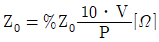
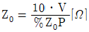
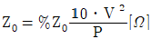
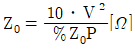
(정답률: 알수없음)
5. 운전속도 V[m/s]. 파동전파속도 C[m/s]일 때 도플러 (Doppler)계수(α)는?
- α = (C×V)/(C-V)
- α = (C-V)/(C+V)
- α = (C+V)/(C×V)
- α = (C×V)/(C+V)
(정답률: 알수없음)
6. 제3궤조방식에서 적용하는 최고풍속[m/s]은?
- 15
- 30
- 45
- 60
(정답률: 알수없음)
7. 가공전차선로의 편위를 정할 때 전치선의 풍압편위, 지지물의 변형, 전기차 동요 등을 감안해서 최대 250[mm]로 정하는데 이때 고려되는 운전가능한 풍속 [m/s]은?
- 30
- 39
- 46
- 55
(정답률: 알수없음)
8. 가공전차선로에서 전차선만 자동장력을 조정할 경우 전차선(110mm2)의 허용장력이 1500kgf일 때 전차선의 표준장력 [kgf]은? (단, 전차선 장력의 변화를 허용장력의 15% 로 시설)
- 1275
- 1425
- 1500
- 1575
(정답률: 알수없음)
9. 강체 전차선의 구성 요소가 아닌 것은?
- T 형제
- 절연매립전
- 애자
- 조가선
(정답률: 알수없음)
10. 연입률의 정의로 맞는 것은?
- 소선의 실제 길이
- 연선의 실제 길이
- 연선의 실제 길이에 대한 소선의 실제 길이 증가 비율
- 소선의 실제 길이에 대한 연선의 실제 길이 증가 비율
(정답률: 알수없음)
11. 경간 60[m]. 구배 1/1000으로 전차선이 낮아진다면 전차선의 높이 5.2[m]인 경우 다음 전주의 전차선 높이[m]는?
- 5.00
- 5.10
- 5.12
- 5.14
(정답률: 알수없음)
12. 전차선 110mm2의 아크전류가 3000[A]라면 전차선의 단선시점은 몇 초[s]인가?
- 0.03
- 0.15
- 0.25
- 0.35
(정답률: 알수없음)
13. 급전구간의 레일과 대지간의 누설전류를 경감하기 위하여 설치한 것은?
- 타이 포스트
- 정류 포스트
- 변압 포스트
- 흡상 포스트
(정답률: 알수없음)
14. 강체전차선로에서 R-Bar 브래킷의 종류가 아닌 것은?
- 가동형
- 단축형
- 확장형
- 고정형
(정답률: 알수없음)
15. 곡선반경이 3000[m]이고 캔트가 6[mm]인 곡선 선로를 열차가 주행할 때 낼 수 있는 최대 속도[km/h]는? (단, 궤간은 1435[mm]로 한다.)
- 약 20
- 약 30
- 약 40
- 약 50
(정답률: 알수없음)
16. 가공 전차선로에서 지지정의 경도를 완화시켜 경간 중앙의 가선 탄성을 균등화하여 집전특성을 좋게 할 목적으로 사용되는 전선은?
- A선
- C선
- Z선
- Y선
(정답률: 알수없음)
17. 부하의 측정에 대한설명으로 거리가 먼 것은?
- 평균전력은 부하율의 산출에 이용된다.
- 부하율은 설비의 무효도를 표시하는 것이다.
- 1일 중 부하전류의 최대값을 순시최대전류라고 한다.
- 부담률 = (순시최대출력/설비용량) × 100[%]
(정답률: 알수없음)
18. 전차선의 마모율과 가장 관계가 없는 것은?
- 전차선의 항장력
- 허용 잔존 지름
- 팬터그래프 통과 회수
- 급전선의 표준장력
(정답률: 알수없음)
19. 곡선당김금구 궁형 및 직선형 암의 표준 설치 각도는?
- 궁형 11° , 직선형 12°
- 궁형 11° , 직선형 13°
- 궁형 11° , 직선형 14°
- 궁형 11° , 직선형 15°
(정답률: 알수없음)
20. 교류강체방식(R-bar)에서 가공전차선로의 흐름방지장치와 같은 역할을 하는 것은?
- 한계점
- 고정점
- 제한점
- 경계점
(정답률: 알수없음)
2과목: 전기철도 구조물공학
21. 가공전차선로에서 지지주간의 경간이 50m 이고, 부급전선의 지름이 20mm 인 경우 부급전선에 선로와 직각방향으로 가해지는 전선의 풍압하중[kgf]은? (단, 풍압하중의 수직투영면적당 하중은 100kgf/m2 이다.)
- 80
- 90
- 100
- 110
(정답률: 알수없음)
22. 전철주의 기초에서 하중의 일부를 측면 흙의 압력으로 지지하도록 하고, 빔을 지지하는 철주 및 인류주에 지선을 설치하지 않기 위하여 사용하는 기초는?
- 중력형 플롯기초
- 우물통기초
- 푸싱기초
- Z형기초
(정답률: 알수없음)
23. 길이 10m인 양단 고정보에서 온도가 40°C 만큼 상승하였을 때, 이 보에 생기는 응력[kgf/cm2]은? (단, 탄성계수 E=2.1×106kg/cm2, 선팽창계수 α=0.00001[1/°C])
- 840
- 750
- 630
- 420
(정답률: 알수없음)
24. 전기철도 구조물 증 2차원 구조물에 해당되지 않는 것은?
- 라멘
- 패널
- 플레이트
- 쉘
(정답률: 알수없음)
25. 그림과 같이 삼각형구조가 평형상태에 있을때 법선방향에 대한 힘의 크기 P는 약 몇 [kg]안가?
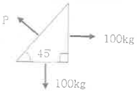
- 87
- 100
- 141
- 200
(정답률: 알수없음)
26. 전철주 푸싱기초 바닥면의 유효 지지력이 100[kN/m2]이고 기초 바닥면의 단면계수가 1.13[m3] 일 때, 기초바닥면의 허용 저항모멘트 M[kNㆍm]는?
- 100
- 113
- 200
- 226
(정답률: 알수없음)
27. 항암제의 길이에 대한 회전 반지룸의 비를 세장비라고 할 때, 전차선료용 강구조물의 주기둥재에서 세장비(λ=L/r) 제한을 얼마 이하로 하는가?
- 200
- 260
- 320
- 420
(정답률: 알수없음)
28. 가공 전차선로에서 표준경간 S[m]. 선로의 곡선반경 R[m]라 할 때 전차선의 편위 d[m]을 구하는 식은?
- S/8R
- S2/8R
- S/16R
- S2/16R
(정답률: 알수없음)
29. 지표면에서 높이가 10m인 단독 지지주에 28kgf/m의 수평분포하중이 작용하는 경우 지면과의 경계점 모멘트[kgfㆍm]는?
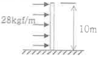
- 280
- 560
- 1400
- 2800
(정답률: 알수없음)
30. 그림과 같이 두 개의 활차를 사용하여 물체를 매달 때 3개의 물체가 평형을 이루기 위한 θ값은? (단, 로프와 활차의 마찰은 무시한다.)
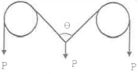
- 30°
- 45°
- 60°
- 120°
(정답률: 알수없음)
31. 힘의 평형 조건식이 유지되기 위한 3대 평형방정식에 해당되지 않는 것은? (단, H는 수평력, V는 수직력, M은 모멘트, T는 장력)
- ∑H = 0
- ∑V = 0
- ∑T = 0
- ∑M = 0
(정답률: 알수없음)
32. 그림과 같이 큰 장력이나 수평장력이 가해지는 헤비 심플커티너리 가선방식의 인류용으로 사용되고 있는 지선방식은?
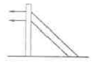
- 수경지선
- 궁형지선
- 2단지선
- V형지선
(정답률: 알수없음)
33. 그림과 같은 트러스 빔에서 A 에 해당되는 것은?
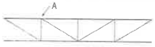
- 지점
- 절정
- 입속
- 경사재
(정답률: 알수없음)
34. 어떤 재료의 탄성계수가 E, 프와숨비가 ν일 때 이 재료의 전단 탄성계수 G는?
- G= E / (1+ν)
- G= E / 2(1+ν)
- G= E / (1-ν)
- G= E / 2(1-ν)
(정답률: 알수없음)
35. 단독 지지주에서 지지정이 6.75m 인 전차선에 136.4kgf 의 수평집중하층이 작용하는 경우, 지면과의 경계정에서 전단력[kgf]은?
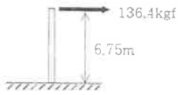
- 20.2
- 80.8
- 136.4
- 920.7
(정답률: 알수없음)
36. 지름 10mm. 길이 20m의 강철봉에 무게 1000kg의 물체를 매달았을 때 강철봉이 늘어난 길이는 약 몇 [cm] 인가? (단, 종탄성계수는 2.1×106kg/cm2 이다.)
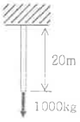
- 0.53
- 0.93
- 1.21
- 1.51
(정답률: 알수없음)
37. 그림과 같이 균일 단면봉이 축하중을 받고 평형을 이룰때. T=2P가 되려면 W는 얼마가 되어야 하는가?
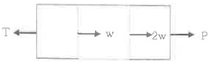
- P
- P/2
- P/3
- 2P
(정답률: 알수없음)
38. 3m이상 제방, 교량 위, 산, 계곡 등에서 구조물의 강도계산에 적용하는 최대풍속[m/s]은?
- 30
- 40
- 50
- 60
(정답률: 알수없음)
39. 그림과 같은 단순보에 하중이 작용할 때 전단력도의 형상은?
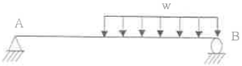
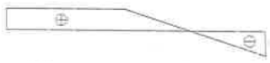
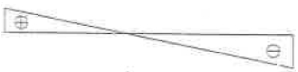
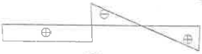
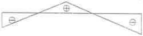
(정답률: 알수없음)
40. 그림에서 빗금친 부분의 도심 y0 값은?
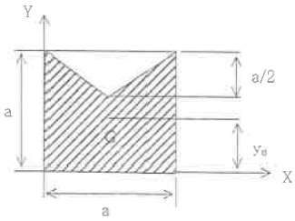
- (13/20)a
- (8/19)a
- (8/17)a
- (7/18)a
(정답률: 알수없음)
3과목: 전기자기학
41. 전기 쌍극자에 대한 설명 중 옳은 것은?
- 반경 방향의 전계성분은 거리의 제곱에 반비례
- 전체 전계의 세기는 거리의 3승에 반비례
- 전위는 거리에 반비례
- 전위는 거리의 3승에 반비례
(정답률: 알수없음)
42. 간격에 비해서 충분히 넓은 평행판 콘덴서의 판 사이에 비유전을 εs인 유전체를 채우고 외부에서 판에 수직방향으로 전계 E0를 가할 때 분극전하에 의한 전계의 세기는 몇 V/m 인가?
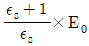
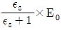
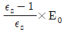
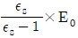
(정답률: 알수없음)
43. 공기 중에 있는 지름 2m의 구도체에 줄 수 있는 최대전하는 약 몇 C인가? (단, 공기의 절연내력은 3000 kV/m 이다.)
- 5.3 × 10-4
- 3.33 × 10-4
- 2.65 × 10-4
- 1.67 × 10-4
(정답률: 알수없음)
44. 와전류손(eddy current loss)에 대한 설명으로 옳은 것은?
- 도전율이 클수록 작다.
- 주파수에 비례한다.
- 최대자속밀도의 1.6승에 비례한다.
- 주파수의 제곱에 비례한다.
(정답률: 알수없음)
45. 평행판 콘덴서의 극판 사이에 유전율이 각각 ε1, ε2 인 두 유전체를 반씩 채우고 극판 사이에 일정한 전압을 걸어줄 때 매질 (1), (2) 내의 전계의 세기 E1, E2 사이에 성립하는 관계로 옳은 것은?
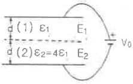
- E2=4E1
- E2=2E1
- E2=E1/4
- E2=E1
(정답률: 알수없음)
46. 단면적 S, 길이 ℓ, 투자율 μ인 자성체의 자기회로에 권선을 N 회 감아서 I 의 전류를 흐르게 할 때 자속은?
- μSI / Nℓ
- μNI / Sℓ
- NIℓ / μS
- μSNI / ℓ
(정답률: 알수없음)
47. 손실유전체(일반매출)에서의 고유잉피던스는?
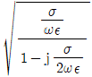
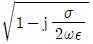
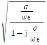
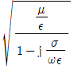
(정답률: 알수없음)
48. 자기 강자율 N=2.5×10-3, 비투자율 μs=100 의 막대형 자성체를 자계의 세기 H=500 AT/m 의 평등자계 내에 놓았을 때 자화의 세기는 약 몇 Wb/m2 인가?
- 4.98 × 10-2
- 6.25 × 10-2
- 7.82 × 10-2
- 8.72 × 10-2
(정답률: 알수없음)
49. 다음 설명 중 옳지 않은 것은?
- 전류가 흐르고 있는 금속선에 있어서 임의 두 정간의 전위차는 전류에 비례한다.
- 저항의 단위는 옴(Ω)을 사용한다.
- 금속선의 저항 R은 길이 l에 반비례한다.
- 저항률(ρ)의 역수를 도전율이라고 한다.
(정답률: 알수없음)
50. 전속밀도가 D=e-2y(axsin2x+aycos2x) (C/m2)일 때 전속의 단위 체적당 발산량(C/m3)은?
- 2e-2ycos2x
- 4e-2ycos2x
- 0
- 2e-2y(sin2x+cos2x)
(정답률: 알수없음)
51. x＜0 영역에는 자유공간, x＞0 영역에는 비유전율 εs=2 인 유전체가 있다. 자유공간에서 전계 E=10ax 가 경계면에 수직으로 입사한 경우 유전체 내의 전속밀도는?
- 5ε0ax
- 10ε0ax
- 15ε0ax
- 20ε0ax
(정답률: 알수없음)
52. 평면도체 표면에서 d(m) 거리에 정전하 Q(C)이 있을 때 이 전하를 무한원점까지 운반하는데 필요한 일(J)은?
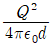
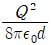
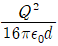
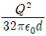
(정답률: 알수없음)
53. 대지면에 높이 h로 평행하게 가설된 매우 긴 선전하가 지연으로부터 받는 힘은?
- h2에 비례한다.
- h2에 반비례한다.
- h에 비례한다.
- h에 반비례한다.
(정답률: 알수없음)
54. 자기인덕턴스 L1, L2 와 상호인덕턴스 M 사이의 결합계수는? (단, 단위는 H 이다.)
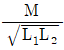
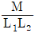
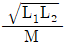
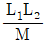
(정답률: 알수없음)
55. 그림과 같이 균일하게 도선을 강은 권수 N, 단면적 S(m2), 평균길이 l(m)인 공심의 환상솔레노이드에 I(A)의 전류를 흘렸을 때 자기인덕턴스 L(H)의 값은?
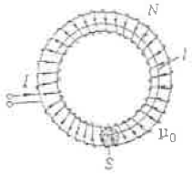
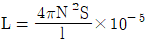
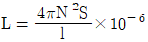
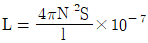
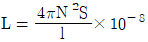
(정답률: 알수없음)
56. 다음 ( )안에 들어갈 내용으로 옳은 것은?
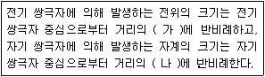
- 가: 제곱, 나: 제곱
- 가: 제곱, 나: 세제곱
- 가: 세제곱, 나: 제곱
- 가: 세제곱, 나: 세제곱
(정답률: 알수없음)
57. 정전계와 정자계의 대응관계가 성립되는 것은?
- divD=ρν → divB=ρm
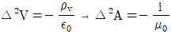
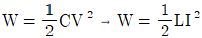
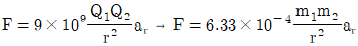
(정답률: 알수없음)
58. 반지름 a (m), 단위 길이당 권수 N, 전류 I (A)인 무한 솔레노이드 내부 자계의 세기(A/m)는?
- NI
- NI/2πa
- 2πNI/a
- aNI/2π
(정답률: 알수없음)
59. 무한장 직선형 도선에 I (A)의 전류가 흐를 경우 도선으로부터 R(m) 떨어진 점의 자속밀도 B (Wb/m2)는?
- B=μI/2πR
- B=I/2πμR
- B=I/4πμR
- B=μI/4πR
(정답률: 알수없음)
60. 방송국 안테나 출력이 W (Ｗ) 이고 이로부터 진공 중에 r (m) 떨어진 점에서 자계의 세기의 실효치 H는 몇 A/m 인가?
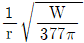
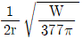
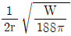
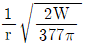
(정답률: 알수없음)
4과목: 전력공학
61. 그림의 F점에서 3상 단락고장이 생겼다. 발전기 쪽에서 본 3상 단락전류는 몇 kA 가 되는가? (단, 154 kV 송전선의 리액턴스는 1000 MVA 를 기준으로 하여 2 %/km 이다.)
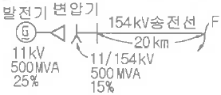
- 43.7
- 47.7
- 53.7
- 59.7
(정답률: 알수없음)
62. 각 전력계통을 연계할 경우의 장점으로 틀린 것은?
- 각 전력계통의 신뢰도가 증가한다.
- 경제급전이 용이하다.
- 단락용량이 작아진다.
- 주파수의 변화가 작아진다.
(정답률: 알수없음)
63. 최대수용전력이 45×103kW인 공장의 어느 하루의 소비전력량이 480×103kWh라고 한다. 하루의 부하율은 몇 %인가?
- 22.2
- 33.3
- 44.4
- 66.6
(정답률: 알수없음)
64. 배전계통에서 부등률이란?
- 최대수용전력 / 부하설비용량
- 부하의 평균전력의 합 / 부하설비의 최대전력
- 최대부하시의 설비용량 / 정격용량
- 각 수용가의 최대수용전력의 합 / 합성 최대수용전력
(정답률: 알수없음)
65. 원자력발전소에서 비등수형 원자로에 대한 설명으로 틀린 것은?
- 연료로 능축 우라늄을 사용한다.
- 감속채로 헬륨 액체금속을 사용한다.
- 냉각재로 경수를 사용한다.
- 물을 원자로 내에서 직접 비등시킨다.
(정답률: 알수없음)
66. 154 kV 송전계통의 뇌에 대한 보호에서 절연강도의 순서가 가장 경제적이고 합리적인 것은?
- 피뢰기 → 변압기 코일 → 기기 부싱 → 결합콘덴서 → 선로애자
- 변압기 코일 → 결합콘덴서 → 피뢰기 → 선로애자 → 기기 부싱
- 결합콘덴서 → 기기 부싱 → 선로애자 → 변압기 코일 → 피뢰기
- 기기 부싱 → 결합콘덴서 → 변압기 코일 → 피뢰기 → 선로애자
(정답률: 알수없음)
67. 1차 변전소에서 가장 유리한 3권선 변압기 결선은?
- △-Y-Y
- Y-△-△
- Y-Y-△
- △-Y-△
(정답률: 알수없음)
68. 그림과 같은 3상 무부하 교류발전기에서 a상이 지략된 경우 지략전류는 어떻게 나타내는가?
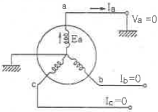
(정답률: 알수없음)
69. 다음 중 가공 송전선에 사용하는 애자련 중전압부담이 가장 큰 것은?
- 전선에 가장 가까운 것
- 중앙에 있는 것
- 철탑에 가장 가까운 것
- 철탑에서 1/3 지점의 것
(정답률: 알수없음)
70. 파동임피던스 Z1=500Ω, Z2=300Ω 인 두 무손실 선로 사이에 그림과 같이 저항 R을 접속하였다. 제1선로에서 구형파가 진행하여 왔을 때 무반사로 하기 위한 R의 값은 몇 Ω인가?
- 100
- 200
- 300
- 500
(정답률: 알수없음)
71. 유효정지계통에서 피뢰기의 정격전압을 결정하는데 가장 중요한 요소는?
- 선로 애자련의 충격섬락전압
- 내부 이상전압 중 과도이상전압의 크기
- 유도뢰의 전압의 크기
- 1선 지락고장시 건전상의 대지전위
(정답률: 알수없음)
72. 부하전류 차단이 불가능한 전력개폐 장치는?
- 진공차단기
- 유입차단기
- 단로기
- 가스차단기
(정답률: 알수없음)
73. 송전 선로의 안정도 향상 대책과 관계가 없는 것은?
- 속응 여자 방식 채용
- 재폐로 방식의 채용
- 리액턴스 감소
- 역률의 신속한 조정
(정답률: 알수없음)
74. 다음 중 환상선로의 단락보호에 주로 사용하는 계전방식은?
- 비율차동계전방식
- 방향거리계전방식
- 과전류계전방식
- 선택접지계전방식
(정답률: 알수없음)
75. 직렬큰덴서를 선로에 삽입할 때의 이점이 아닌 것은?
- 선로의 인덕턴스를 보상한다.
- 수전단의 전압강하를 줄인다.
- 정태안정도를 증가한다.
- 송전단의 역률을 개선한다.
(정답률: 알수없음)
76. 화력발전소에서 재열기의 사용 목적은?
- 공기를 가열한다.
- 급수를 가열한다.
- 증기를 가열한다.
- 석탄을 건조한다
(정답률: 알수없음)
77. 송ㆍ배전 전선로에서 전선의 진동으로 인하여 전선이 단선되는 것을 방지하기 위한 설비는?
- 오프셋
- 크램프
- 댐퍼
- 초호환
(정답률: 알수없음)
78. 배전선의 전력손실 경감 대책이 아닌 것은?
- 피더(feeder) 수를 줄인다.
- 역률을 개선한다.
- 배전 전압을 높인다.
- 부하의 불평형을 방지한다.
(정답률: 알수없음)
79. 3상 3선식 송전선로가 소도체 2개의 복도체 방식으로 되어있을 때 소도체의 지름 8cm, 소도체 간격 36cm, 등가선간 거리 120cm인 경우에 복도체 1km의 인덕턴스는 약 몇 mH인가?
- 0.4855
- 0.5255
- 0.6975
- 0.9265
(정답률: 알수없음)
80. 배전 선로의 배전 변압기 탭을 선정함에 있어 틀린 것은?
- 중부하시 탭 변경점 직전의 저압선 말단 수용기의 전압을 허용 전압 변동의 하한보다 저하시키지 않아야 한다.
- 중부하시 탭 변경점 직후 변압기에 접속된 수용기 전압을 허용 전압 변동의 상한보다 초과시키지 않아야 한다.
- 경부하시 변전소 송전 전압율 저하시 최초의 탭 변경점 직전의 저압선 말단 수용기의 전압을 허용 전압 변동의 하한보다 저하시키지 않아야 한다.
- 경부하시 탭 변경점 직후의 변압기에 접속된 접압을 허용 전압 변동의 하한보다 초과하지 않아야 한다.
(정답률: 알수없음)